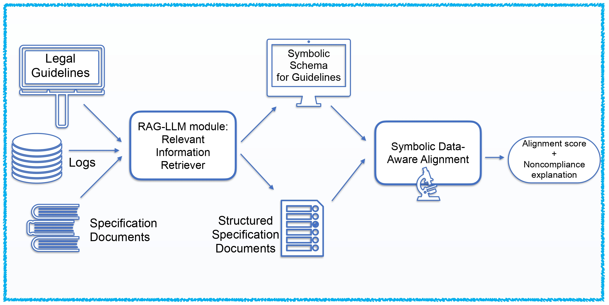
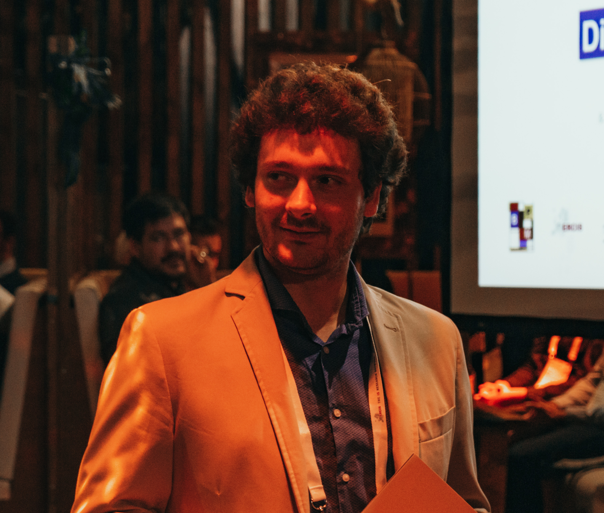
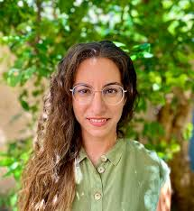
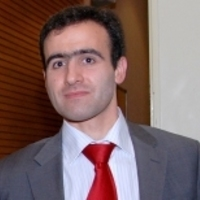
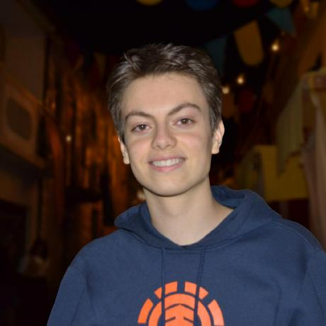
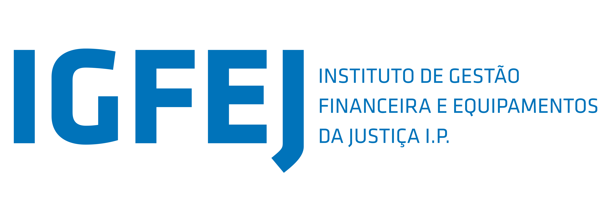

OptiGov Project
Public administrations operate within intricate and evolving regulatory ecosystems, making it difficult to ensure that their process executions and documents fully meet all the legal requirements. The OptiGov Project harnesses AI — through Process Mining and Large Language Models — to automatically check and align these processes with their corresponding legal rules, ensuring compliance and transparency.
Topics of the project
AI, Process Mining, PM, Automated Reasoning, Compliance Checking, Formal Methods
News
Project Description
Public administration processes are highly complex due to multiple constraints, frequent deviations from legislators’ “happy paths,” and extensive compliance requirements. This project leverages Data Science and Artificial Intelligence (AI) — notably Process Mining (PM) and Large Language Models (LLMs) — to manage and optimize such complexity. Process Mining integrates business process management and data science, using event logs to analyze performance and detect bottlenecks. LLMs, trained on vast text corpora, can interpret and structure unstructured documents, making them ideal for extracting knowledge from legal and technical texts.
Public administration faces major compliance challenges when aligning process specification documents (e.g., enterprise architecture files) with legal guidelines often written in natural language. Traditional PM focuses mainly on process activities, neglecting data interactions. Recent multi-perspective PM research captures these aspects but still struggles with unstructured data.
This project proposes a general-purpose, log-based compliance method, which consists of aligning enriched specification documents with normative guidelines, inspired by symbolic techniques in data-aware declarative PM. LLMs are used to preprocess textual documents, converting them into structured symbolic representations, in order to enable symbolic alignment. The approach involves (i) defining a symbolic formalism for expressing process constraints, (ii) extracting and structuring legal and specification data using LLMs, and (iii) computing alignment scores that quantify compliance.
A pilot on ICT governance in Portuguese public entities will assess the alignment between enterprise architecture specifications and national ICT guidelines (Decree-Law 107/2012). In collaboration with ARTE and IGFEJ public administrations, this initiative aims to enhance compliance, improve efficiency, and support better public service delivery.
General Goal: To align contractual specification documents of PA processes (e.g., document defining technological requirements) with legal guidelines
Methodology
The project is structured in 4 phases:
- Symbolic Formalization of Guidelines and Specifications.
- design a symbolic schema for both contractual specification documents and guidelines.
- identify logical formalisms (temporal reasoning + conditions over data): fragments of First-Order Linear Temporal Logic (FO-LTL).
- Information Extraction via LLMs and RAG.
- develop a knowledge extraction pipeline based on LLMs, based on RAG and CoT.
- transform diverse textual inputs into the structured symbolic schema.
- RAG to dynamically access relevant context at inference time.
- CoT (with uncertainty and factuality-checking techniques) to address semantic fidelity integrate extracted information from event logs
- Symbolic Alignment via Formal Methods.
- develop an alignment algorithm for: structured documents against regulatory schemas.
- symbolic reasoning to compute a compliance score quantifying the degree of alignment
- identify specific discrepancies and their types.
- Validation and Evaluation.
- testing and validating the methodology using real data from partner PA entities (AMA and IGFEJ).
- Goal: (i) measure the precision and recall of LLM-based extraction methods; (ii) evaluate the interpretability and reliability of the alignment scores (iii) test the system’s ability to handle complex, heterogeneous document types.

Results
Beyond the publications listed below, we report here the links to the two main technical reports of the project:
- Report1 (PDF): this technical report presents ARCCS, the LLM-based component of the OptiGov tool chain. You can find all source code and datasets at: https://github.com/geofila/ARCCS
- Report2 (PDF): this technical report presents the ACTL framework and tool applied to a Portugues public administration process. You find the source code at: https://github.com/AlessandroGianola/optigov-actl-check
The project contributions resulted also in the following 5 MSc theses and 1 PIC2 document:
- José João Alves dos Santos Ferreira. Specifying and Testing Distributed Protocols with Action Temporal Logic. Master's Thesis, Instituto Superior Técnico. November 2025 [MSc1]
- Lucas Fortunato Das Neves. Learning to Disambiguate Queries with Respect to Business Processes. Master's Thesis, Instituto Superior Técnico. November 2025 [MSc2]
- Rodolfo Jorge Antunes Amorim. TokenCP – Non-Exchangeable Conformal Prediction for Uncertainty Quantification. Master's Thesis, Instituto Superior Técnico. January 2026 [MSc3]
- David Afonso Prazeres da Cruz Valente. Enhancing Large Language Models with Dynamic Thinking Tokens. Master's Thesis, Instituto Superior Técnico. November 2025 [MSc4]
- Andreia Silva Azevedo. Applying the Business Process Management Lifecycle to Public Sector Digital Platforms: A Case Study approach in the Portuguese public sector. Master's Thesis, Instituto Superior Técnico. October 2025 [MSc5]
- José Menezes. Process-Aware Retrieval-Augmented Generation for Auditable Compliance Reasoning. PIC2 document, Instituto Superior Técnico. January 2026 [MSc6]
The following video presents a demo of the ARCCS web interface:
People

Alessandro Gianola
Principal Investigator - Local Coordinator at INESC-ID. Professor Auxiliar, INESC-ID/Instituto Superior Técnico, Universidade de Lisboa

Chrysoula Zerva
Local Coordinator at Instituto de Telecomunicações. Professor Auxiliar, Instituto de Telecomunicaçœes/Instituto Superior Técnico, Universidade de Lisboa
INESC-ID
Faculty members

Research Assistants

José João Ferreira
Master's student, INESC-ID/Instituto Superior Técnico, Universidade de Lisboa
Lucas Fortunato das Neves
Master's student, INESC-ID/Instituto Superior Técnico, Universidade de Lisboa

Instituto de Telecomunicações
Research Assistants
Giorgos Filandrianos
Postdoctoral Researcher. Instituto de Telecomunicações
Rodrigo Lopes
Master's student. Instituto de Telecomunicações/Instituto Superior Técnico, Universidade de Lisboa
Rodolfo Amorim
Master's student. Instituto de Telecomunicações/Instituto Superior Técnico, Universidade de Lisboa
José Menezes
Master's student. Instituto de Telecomunicações/Instituto Superior Técnico, Universidade de Lisboa
José Lopes
Master's student. Instituto de Telecomunicações/Instituto Superior Técnico, Universidade de Lisboa
Supporting Public Administrations
Agência para a Reforma Tecnológica do Estado (ARTE), Portugal
Agência para a Reforma Tecnológica do Estado, I.P. (Agency for Technological Reform of the State, - ARTE) is the public institute responsible for directing, coordinating, and implementing the technological transformation and digitalization of Public Administration in Portugal, operating under the supervision and authority of the Ministry of State Reform.
ARTE was established in 2025 as part of the restructuring of the Agência para a Modernização Administrativa (Agency for Administrative Modernization - AMA), with the aim of promoting administrative modernization and simplification, ensuring system and data interoperability, implementing cybersecurity and data policies, integrating emerging technologies, coordinating the omnichannel and in-person service network, and strengthening the digital skills of Portuguese society, working in close cooperation with all entities of the Public Administration.

Instituto de Gestão Financeira e Equipamentos da Justiça (IGFEJ), Portugal
The Instituto de Gestão Financeira e Equipamentos da Justiça (Institute for Financial Management and Justice Equipment - IGFEJ) manages the financial, property, and technological resources of the Ministry of Justice in Portugal. It is a public institute, endowed with administrative and financial autonomy and its own assets, which carries out the responsibilities of the Ministry of Justice under its supervision and authority.
It was created in 2012, is part of the State’s indirect administration, and has jurisdiction over the entire national territory. It plays a central role within the Ministry of Justice, providing essential services for the proper functioning of the judicial system. The IGFEJ operates in several areas that cut across the Ministry of Justice, namely budgetary and financial management, assets and construction, technological infrastructure, and information systems.
Publications
- A. Gianola, M. Montali, S. Winkler. Object-centric Processes with Structured Data and Exact Synchronization: Formal Modelling and Conformance Checking. Proceedings of CAiSE 2025. Springer. 2025 (Link)
- J. Casas-Ramos, S. Winkler, A. Gianola, M. Montali, M. Mucientes, M. Lama. Efficient Conformance Checking of Rich Data-Aware Declare Specifications. Proceedings of BPM 2025. Springer. 2025 (Link)
- A. Gianola, A. Rivkin, M. Slazynski. Constraint-based reasoning and analysis for BPM: CSP to the rescue. Proceedings of BPM 2025 (Tutorial). Springer. 2025 (Link)
- R. Petros, G. Filandrianos, M. Lymperaiou, G. Stamou. PAKTON: A Multi-Agent Framework for Question Answering in Long Legal Agreements. Proceedings of EMNLP 2025. 2025 (Link)
- J. Mire, Z. Trivadi Aysola, D. Chechelnitsky, N. Deas, C. Zerva, and M. Sap. Rejected Dialects: Biases Against African American Language in Reward Models. In Findings of the Association for Computational Linguistics: NAACL 2025, Association for Computational Linguistics. 2025.
- G. E. Cavaco Gomes, C. Zerva, and B. Martins. Evaluation of Multilingual Image Captioning: How far can we get with CLIP models?. In: Findings of the Association for Computational Linguistics: NAACL 2025, Association for Computational Linguistics. 2025. (Link)
- G. E. Cavaco Gomes, B. Martins, and C. Zerva. A Conformal Risk Control Framework for Granular Word Assessment and Uncertainty Calibration of CLIPScore Quality Estimates. In Findings of the Association for Computational Linguistics: ACL 2025, Association for Computational Linguistics. 2025. (Link)
- G. Filandrianos, O. Menis Mastromichalakis, W. Mohammed, G. Attanasio, and C. Zerva. GAMBIT+: A Challenge Set for Evaluating Gender Bias in Machine Translation Quality Estimation Metrics. Proceedings of the Tenth Conference on Machine Translation, Association for Computational Linguistics. 2025.
- E. Partalidou, T. Passali, C. Zerva, G. Tsoumakas, and S. Ananiadou. Towards Trustworthy Summarization of Cardiovascular Articles: A Factuality-and-Uncertainty-Aware Biomedical LLM Approach. Proceedings of the 2nd Workshop on Uncertainty-Aware NLP (UncertaiNLP 2025), Association for Computational Linguistics. 2025
- L. Fortunato Das Neves, C. Zerva and A. Gianola. A Proposal For Handling Query Ambiguity For Process Mining Tasks. Proceedings of OVERLAY 2025, co-located with ECAI 2025. CEUR-WS. 2025. (Link)
- J. J. Ferreira, N. Policarpo, J. Fragoso Santos, A. Cunha, A. Gianola. First-Order Linear Temporal Logic for Testing Distributed Protocols Proceedings of OVERLAY 2025, co-located with ECAI 2025. CEUR-WS. 2025. (Link)
- A. Gianola, C. Zerva. Compliance Checking for Public Administration Processes using Retrieval-Augmented Generation in LLMs: Novel Directions and Challenges. Proceedings of OVERLAY 2025, co-located with ECAI 2025. CEUR-WS. 2025. (Link)
- A. Seidel, S. Winkler, A. Gianola, M. Montali, M. Weske. To Bind or Not to Bind? Discovering Stable Relationships in Object-Centric Processes. Proceedings of ER 2025, Springer. 2025
- P. Olivieri, F.Lasca, A. Gianola, M. Papini. Do It for HER: First-Order Temporal Logic Reward Specification in Reinforcement Learning. Proceedings of AAAI 2026, AAAI Press, 2026 (Link)